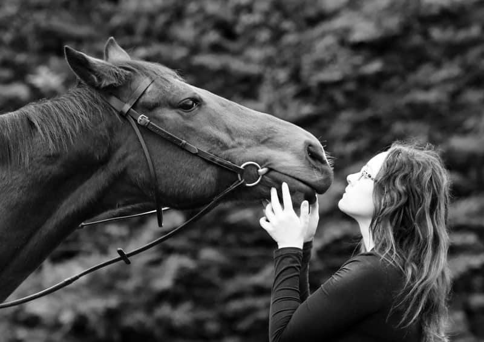

About Sarah McLean
The equestrian professional behind McLean Equine.

Passionate About Horses. Grounded in Science.
I'm Sarah McLean, and horses have been central to my life for as long as I can remember. McLean Equine grew from a simple belief: that horses and riders are best served by a professional who truly understands the science behind what they do — not just someone who's spent time in the saddle.
Based in Wantage, Oxfordshire, I work with horses and riders across the county and into Berkshire. My background spans competitive riding, racehorse preparation, large yard management, and formal academic study in equine science — giving me a breadth of knowledge that I bring to every client, whatever their level or goal.
Whether I'm coaching a nervous novice, schooling a talented competition horse, or providing hands-on care for a busy owner — the approach is always the same: professional, evidence-informed, and genuinely focused on the horse's welfare.
A Career Built on Knowledge and Care
My equestrian journey began with a genuine love of horses and developed into serious competitive ambition — riding up to Novice dressage and 1m showjumping, and gaining hands-on experience in racing, including exercising racehorses and supporting race preparation at professional level.
Alongside practical experience, I've always been drawn to the science. I completed a BSc (Hons) in Equine Science, giving me a deep grounding in equine anatomy, physiology, behaviour, biomechanics and training theory. I'm currently working towards a PhD, continuing to deepen my understanding of how horses move, learn and thrive.
Before establishing McLean Equine as a freelance business, I managed a large riding school and livery yard — an experience that shaped my understanding of what high-standard horse care looks like in practice and at scale. That operational grounding, combined with my BHS coaching qualification and senior groom credentials, means I bring a rounded, professional perspective to every engagement.
McLean Equine was established to offer that same level of professionalism — flexibly, personally, and with the horse always at the centre.
Qualifications & Experience
BSc (Hons) Equine Science
Undergraduate degree providing in-depth grounding in equine anatomy, physiology, biomechanics, behaviour and welfare.
PhD in Equine Science (In Progress)
Postgraduate research extending Sarah's academic expertise in equine science — keeping her practice at the cutting edge of the field.
BHS Stage 2 Coach
British Horse Society coaching qualification, demonstrating teaching ability to the industry's recognised standard. Aiming for BHS Stage 3.
Level 3 Senior Equine Groom (Diploma)
Senior-level professional qualification in equine care, stable management and welfare — above the standard required for most freelance roles.
Diploma in Racehorse Care & Management
Specialist qualification in racehorse handling, preparation and management — directly informing Sarah's ex-racehorse retraining work.
Competitive Experience
Personal competition experience up to Novice dressage and 1m showjumping, plus racing experience including exercising and race preparation.
Yard Management Experience
Previous management of a large riding school and livery yard, building strong operational knowledge of professional yard standards and client care.
Values That Inform Everything
Science-Informed Practice
Every coaching session, care routine and training decision is informed by current scientific understanding of how horses move, learn and respond — not just tradition or habit.
Horse Welfare First
The horse's physical and mental wellbeing is never compromised. If something isn't in the horse's best interest, it won't be done — regardless of external pressures.
Tailored to You
No two horses or riders are the same. Every client receives an approach that's genuinely tailored — built around their horse, their goals, and their circumstances.
Work With Sarah
Ready to discuss your horse's needs? Sarah responds to all enquiries personally and is happy to talk through how McLean Equine can help.
Get in Touch